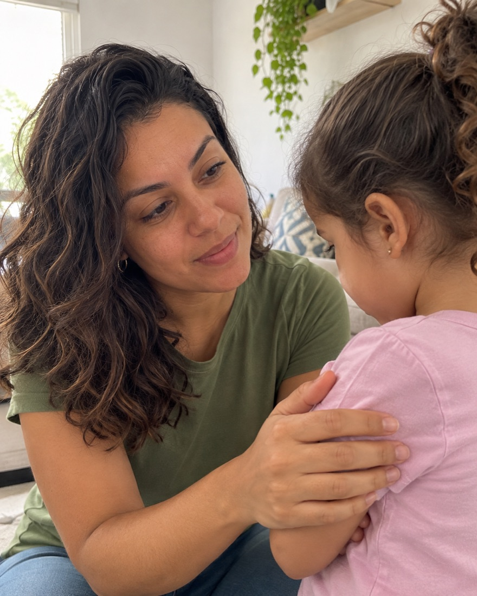
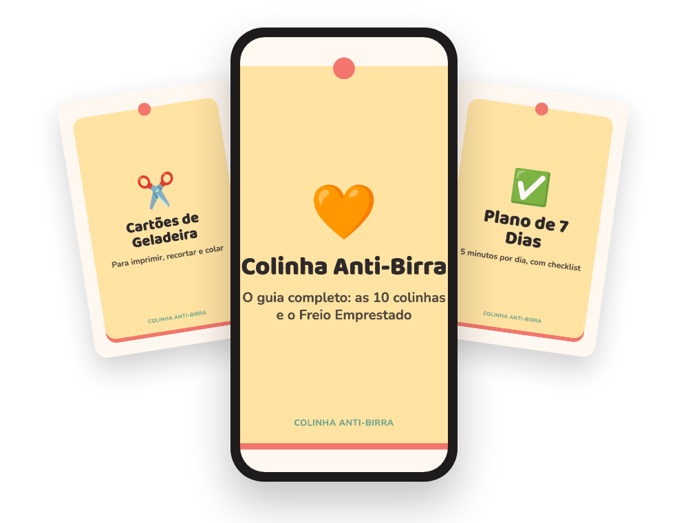
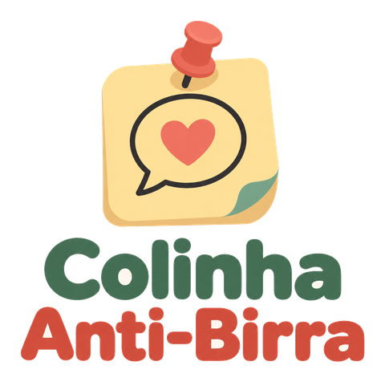

Descubra a frase certa para a birra do seu filho, de acordo com a idade dele
Responda 12 perguntas rápidas e receba o seu Mapa da Birra: onde as crises mais acontecem e por onde começar.

Para mães e pais de crianças de 1 a 6 anos. O teste é gratuito; no final você pode, se quiser, levar a Colinha completa.
- Analisando as suas respostas...
- Separando as frases para a idade do seu filho...
- Montando o seu Mapa da Birra...
O seu Mapa da Birra está pronto
O que o seu Mapa mostra
- Idade:
- Nessa idade, isso é esperado: o freio ainda está em construção.
- O que vai mudar o seu dia: ter a frase pronta antes da crise e um plano de 5 minutos por dia.
A Colinha foi feita para crianças de 1 a 6 anos. Com crianças maiores, muitas frases da versão de 4 a 6 anos ainda ajudam, mas o material não foi pensado para essa idade.
Assista: a Clara explica o seu Mapa
O vídeo não carregou agora. A oferta já está logo abaixo.
Oferta
Pagamento único · Pix ou cartão
QUERO MINHA COLINHA ANTI-BIRRAAcesso no seu e-mail logo após o pagamento · Garantia de 7 dias


As frases prontas para as 10 birras do dia, em cartões para colar na geladeira, com o método Freio Emprestado e um plano de 7 dias para você atravessar a birra sem gritar.
O que você recebe
- As 10 colinhas: frases prontas para cada situação, com uma versão para 1 a 3 anos e outra para 4 a 6 anos.
- Guia Freio Emprestado: os 3 passos para atravessar a birra sem gritar, explicados de um jeito simples.
- Cartões de geladeira: para imprimir e colar, e também uma versão para a tela do celular.
- Plano de 7 dias: 5 minutos por dia para trocar o grito pela calma, aos poucos.
- Quando procurar o pediatra: os sinais de que vale conversar com um profissional.
Em amarelo, com ✓: as que você marcou no teste.
Como funciona: Freio Emprestado em 3 passos
Pausa
Você freia primeiro: uma respiração e abaixa na altura da criança.
Frase pronta
Uma frase curta que dá nome ao que ela sente e mantém o limite.
Reparo
Se escapou um grito, a frase para pedir desculpa e reconectar.
Para quem é (e para quem não é)
Para quem é
Mães e pais de crianças de 1 a 6 anos que querem gritar menos e ter a frase certa na hora da birra.
Para quem não é
Não é tratamento. Se você desconfia de autismo, TDAH ou outra condição, fale com o pediatra.
Por que é tão barato?
É digital e a gente quer que caiba no bolso de qualquer mãe.
Colinha Anti-Birra completa
Pagamento único · Pix ou cartão
QUERO MINHA COLINHA ANTI-BIRRAPagamento único, sem mensalidade e sem cobrança escondida.
Garantia de 7 dias. Se não gostar, é só pedir o reembolso dentro desse prazo e você recebe o valor de volta.
Perguntas frequentes
Como eu recebo?
Assim que o pagamento é aprovado, o acesso chega no e-mail que você usar na compra. Quem envia é a Cakto, a plataforma de pagamento. No cartão é na hora; no Pix, logo depois da confirmação. Dá para abrir tudo no celular.
Serve para qual idade?
Para crianças de 1 a 6 anos. Cada colinha tem uma versão para 1 a 3 anos e outra para 4 a 6 anos.
Precisa imprimir?
Não. Tem a versão para a tela do celular. Os cartões para imprimir são para quem quer a frase colada na geladeira.
É assinatura?
Não. É um pagamento único de R$ 27, sem mensalidade.
Serve para autismo ou TDAH?
A Colinha não é tratamento e não foi feita para nenhuma condição específica. Se você desconfia de autismo, TDAH ou outra condição, converse com o pediatra: é ele quem pode avaliar e orientar.
E se eu não gostar?
Você tem 7 dias de garantia. Se não gostar, pede o reembolso dentro desse prazo e recebe o valor de volta.